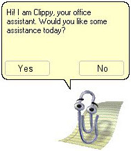

Introduction to Rust
2022-03-01 (last edit: 2022-03-09)

Why use Rust?
- It is safe (compared to C++ for example, as we will see in a minute)
- It is fast (because it is compiled to machine code)
- It is ergonomic and pleasant to use (static typing, expressive type system, helpful compiler warnings)
- It is loved by programmers
- It provides excellent tooling
Why learn Rust?
Even if you don't end up using Rust, learning it expands your horizons
- it helps especially with the awareness of what you can and can't do in concurrent applications
- it helps you understand memory management and learn its good practices
Why not to learn Rust?
- Some people say Rust is too hard to learn because of the borrow checker
- Once you get to know Cargo you won't ever want to use a language without a built-in package manager ;)
- You will start hating C++ (Piotrek, don't punch me!)
Demo
Let's compare the same code written in C, C++ and Rust.
Installing Rust
- Rustup
- Setup an IDE
- CLion (you can get it for free) and Intellij-Rust
- VSCode and rust-analyzer
- rust-analyzer also works with other IDEs
Useful tools

cargo clippy(for static analysis)- there's also
cargo check, but it's less powerful than clippy cargo fmt(for code formatting)
Rust Playground
Hello world
fn main() {
let name = "World";
println!("Hello, {}!", name); // using the println! macro
}
(Download the source code for this example: hello_world.rs)
Variables
#![allow(unused_variables)]
#![allow(unused_assignments)]
fn main() {
let x = 40; // inferred type
let y: i32 = 100; // specified type
{
let x = 40 + 2; // shadowing
println!("x is {}", x); // prints 42
}
// x = 0; // compilation error, variables are by default immutable
let mut x = 40; // declare as mutable
x = 0; // now we can reassign
x += 1; // x = x + 1
}
(Download the source code for this example: variables.rs)
Conditionals
#![allow(unused_variables)]
fn main() {
let x = 42;
if x == 42 {
println!("x is 42");
} else if x == 43 {
println!("x is 43");
} else {
println!("x is not 42 or 43");
}
// we can also use ifs as expressions
let a_or_b = if x == 0 {
"a" // notice no semicolon at the end
} else {
"b"
};
}
(Download the source code for this example: conditionals.rs)
Loops
#![allow(unused_variables)]
fn main() {
for i in 0..10 {
println!("i is {}", i); // i in [0, 10)
}
let mut x = 0;
while x < 50 {
x += 1;
}
let mut y = 0;
let mut iterations = 0;
loop {
iterations += 1;
if iterations % 2 == 0 {
continue;
}
y += 1;
if y == 10 {
break;
}
}
// we can use labels to refer to a specific loop
let mut count = 0;
'counting_up: loop {
let mut remaining = 10;
loop {
if remaining == 9 {
break;
}
if count == 2 {
break 'counting_up; // ends the outer loop
}
remaining -= 1;
}
count += 1;
}
// We can use break with a value.
// Because loops are expressions too,
// the value we break with will be returned from the functions
let mut counter = 0;
let value = loop {
counter += 1;
if counter == 10 {
break 32;
}
};
}
(Download the source code for this example: loops.rs)
Functions
fn get_5() -> u32 {
5 // we could also write "return 5;"
}
fn print_sum(a: u32, b: u32) {
println!("a + b = {}", a + b);
}
fn main() {
let a = 100;
print_sum(a, get_5());
}
(Download the source code for this example: functions.rs)
Test assignment (not graded)
Click here